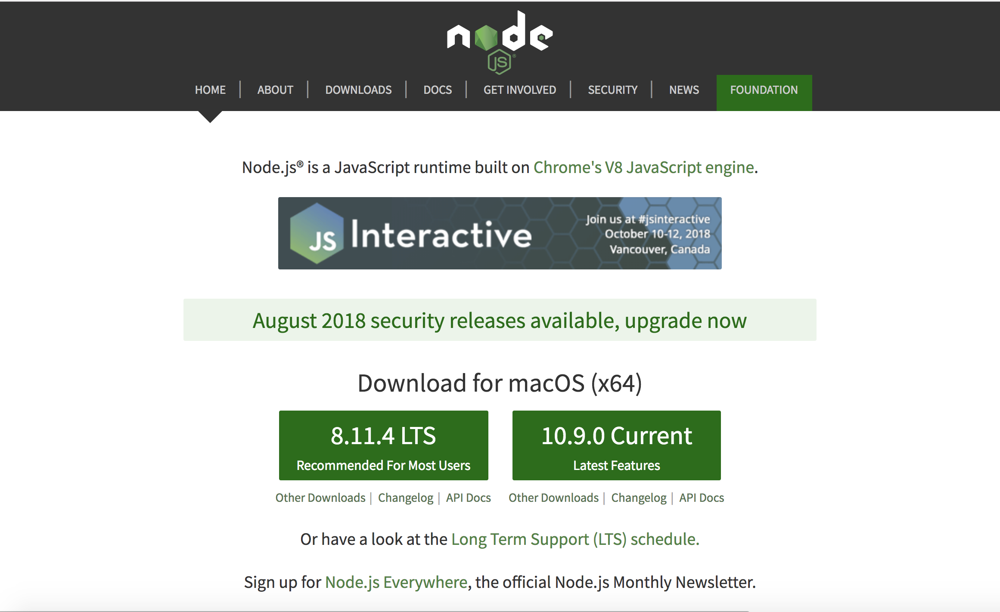
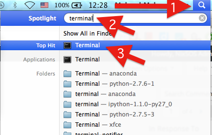
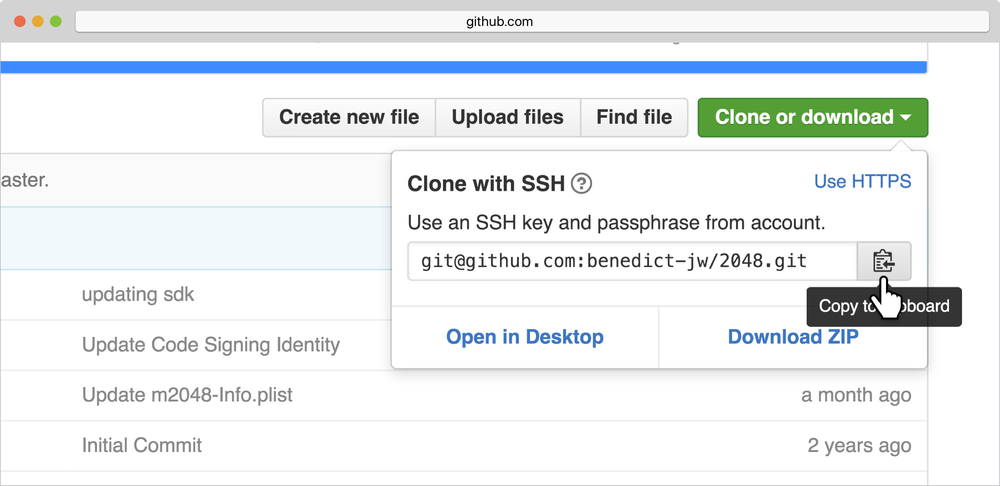

Hello User, for this program to run to you need to download and install a couple things for this to function correctly.
Below listed are the steps to take to run this program
First your have to go to the Node.JS website to download a version of Node
After you have downloaded node.js, open terminal application
Go to Github to copy LIRI-Bot Git URL and do a git clone on terminal
Once you see the file on your desktop, use terminal to navigate to that folder
Once you navigated to the file type in the following installs to run the program. Without these the program will run into errors:
After that, type in any of the following commands to run the program without the parentheses
Thats it yayyy